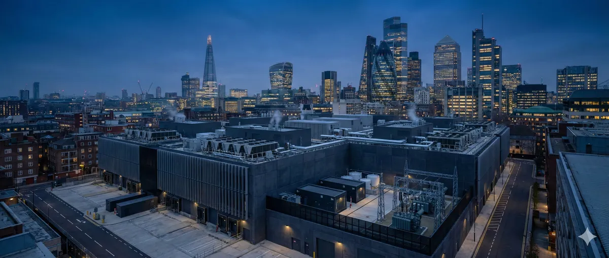

1. The Nuclear Gold Rush
Something extraordinary happened in the data center industry in 2024-2025. Five of the world's largest technology companies — Microsoft, Amazon, Google, Meta, and Oracle — simultaneously turned to nuclear energy as the answer to AI's insatiable power demands. Not wind. Not solar. Not batteries. Nuclear.
The numbers tell the story. Microsoft signed a $1.6 billion deal to restart Three Mile Island Unit 1, rebranded as the Crane Clean Energy Center. Amazon locked in a 1,920 MW power purchase agreement with Talen Energy's Susquehanna nuclear plant running through 2042. Google partnered with Kairos Power for 500 MW of advanced reactors by 2035. Meta announced nuclear deals totaling 6.6 GW with three separate providers. And Oracle's CEO casually mentioned they'd already secured building permits for three small modular reactors.
As a data center engineer who has spent years optimizing facility power and cooling systems, I find this nuclear pivot both entirely logical and deeply uncertain. The logic is clear: AI training clusters consume megawatts around the clock, and nothing matches nuclear's combination of density, reliability, and carbon-free output. The uncertainty is equally clear: no commercial SMR has ever powered a data center, costs have a history of spiraling, and timelines measure in years, not months.
This article examines the technology, the deals, the economics, and the engineering reality behind the biggest energy bet in data center history.
2. The Power Crisis No One Predicted
The fundamental driver behind Big Tech's nuclear pivot is a power demand crisis that caught the entire energy industry off guard. When ChatGPT launched in November 2022 and GPU clusters started scaling exponentially, data center power projections became obsolete overnight.
The Scale of Demand
A single hyperscale AI training cluster like Meta's Prometheus can consume 1 GW of continuous power — equivalent to powering a city of 750,000 homes. That is one facility, one company.
The projections paint a sobering picture. The International Energy Agency projects global data center electricity consumption will double from 460 TWh in 2024 to roughly 945 TWh by 2030. Goldman Sachs projects a 165-175% surge in data center power demand by 2030. The Lawrence Berkeley National Laboratory found that US data centers alone consumed 176 TWh in 2023 — 4.4% of total US electricity — and could reach 325-580 TWh by 2028.
| Source | Metric | Current (2024) | Projected (2030) | Growth |
|---|---|---|---|---|
| IEA | Global DC electricity | 460 TWh | 945 TWh | +105% |
| Goldman Sachs | DC power demand | 1-2% global | 3-4% global | +165-175% |
| S&P Global | US DC grid power | ~50 GW | 134.4 GW | ~3x |
| LBNL / DOE | US DC electricity | 176 TWh (4.4%) | 325-580 TWh | +85-230% |
| McKinsey | DC capacity demand | Baseline | 3.5x | +250% |
This is not a gradual scaling curve. This is the fastest-growing category of electricity demand on the planet — growing at 15% per year, four times faster than all other sectors combined.
Why renewables alone cannot solve this
Solar has a capacity factor of roughly 25%. Wind averages about 35%. Nuclear exceeds 90%. AI training workloads run 24 hours a day, 7 days a week, often for weeks or months continuously. You cannot pause a training run because the sun went down or the wind stopped. And the battery storage required to bridge a multi-day weather event for a 500 MW campus simply does not exist at economic scale.
Nuclear provides what AI actually needs: 24/7 carbon-free baseload power at the density required by modern GPU clusters. A single 300 MW SMR produces more reliable energy per year than a 1 GW solar farm.
3. What Are Small Modular Reactors?
A Small Modular Reactor is a nuclear fission reactor with electrical output below 300 MWe, designed for factory fabrication and modular deployment. Unlike traditional gigawatt-scale nuclear plants that require massive on-site construction over a decade, SMRs are built in factories and shipped to site — at least in theory.
Key advantages over traditional nuclear
Scalability: Deploy one module, add more as demand grows. A 4-pack of 80 MW Xe-100 reactors gives you 320 MW. Need more? Add another 4-pack. This matches the phased deployment model that hyperscalers already use for data center campuses.
Passive safety: Most SMR designs use passive safety systems — natural circulation, gravity-fed cooling, negative temperature coefficients — that shut the reactor down safely without human intervention or external power. This fundamentally changes the safety equation compared to older designs.
Flexible siting: Smaller footprint, reduced emergency planning zones, and some designs that work with air cooling (no cooling towers needed) mean SMRs can be located where data centers are, not where rivers are.
Co-location potential: Behind-the-meter or adjacent-to-grid deployment eliminates grid interconnection queue delays, which currently average 5+ years in the US with over 2,600 GW of projects waiting.
Engineering Reality Check
No commercial SMR has ever been built and operated in the Western world. Every timeline, every cost estimate, and every performance claim is based on projections from first-of-a-kind (FOAK) technology. The gap between factory-built modular theory and construction-site reality has historically been measured in billions of dollars and years of delay.
4. Big Tech's Nuclear Portfolio
The scale of Big Tech's nuclear commitments is unprecedented. Here is every major deal, with verified figures.
Microsoft — Constellation Energy
20-year PPA to restart Three Mile Island Unit 1 (rebranded Crane Clean Energy Center). The entire 835 MW output goes to Microsoft AI data centers. $1.6B project cost. DOE issued a $1B loan in November 2025. Accelerated from 2028 to 2027.
Amazon — Talen Energy (Susquehanna)
AWS acquired a 960 MW data center campus adjacent to Susquehanna nuclear plant for $650M. After FERC denied behind-the-meter expansion, Talen and Amazon restructured to a 1,920 MW PPA through 2042 as a front-of-meter arrangement.
Amazon — X-energy (Cascade Project)
Cascade Advanced Energy Facility near Richland, WA. Phase 1: four Xe-100 SMRs for 320 MW. Full build-out: 12 units, 960 MW. Aecon selected as construction partner (October 2025). Operations target: 2030s.
Google — Kairos Power / TVA
Master agreement for 500 MW of advanced reactors by 2035. First 50 MW PPA via TVA at Oak Ridge, TN using Hermes 2 reactor (first Gen IV reactor PPA by a US utility). Kairos uses molten fluoride salt coolant with TRISO fuel. Hermes demo construction began May 2025.
Meta — Vistra / TerraPower / Oklo
The largest nuclear announcement in tech history: 6.6 GW across three vendors. Vistra provides 2.1+ GW from existing Ohio plants. TerraPower builds two new Natrium units (690 MW). Oklo begins pre-construction in 2026. Powers the Prometheus AI Supercluster (1+ GW, New Albany, Ohio).
Oracle — 3-SMR Campus
CEO Larry Ellison announced a data center powered by three SMRs for 1+ GW total capacity. Claims building permits already obtained. Oracle's largest existing site commands 800 MW. No specific vendor, location, or detailed timeline disclosed.
Combined Nuclear Commitment
Adding Microsoft (835 MW), Amazon (2,880 MW across two deals), Google (500 MW), Meta (6,600 MW), and Oracle (1,000+ MW) gives a combined commitment exceeding 11.8 GW of nuclear capacity — equivalent to roughly 12 traditional nuclear power plants. In December 2025, FERC unanimously ruled that AI facilities can plug directly into nuclear generators, bypassing grid interconnection queues.
5. SMR Technology Showdown
Not all SMRs are created equal. Six designs are competing for the data center market, each with fundamentally different approaches to reactor physics, cooling, and deployment.
| Reactor | Developer | Output | Type | Coolant | NRC Status | First Online | Key Backer |
|---|---|---|---|---|---|---|---|
| VOYGR | NuScale | 77 MWe/module | Light Water | Water | NRC Certified (May 2025) | 2029 (Romania) | Romania, KHNP |
| BWRX-300 | GE-Hitachi | 300 MWe | Boiling Water | Water | Under review | 2029-2030 | OPG Canada, TVA |
| Xe-100 | X-energy | 80 MWe/unit | HTGR Pebble Bed | Helium | Pre-application | 2029 (Dow), 2030s (Amazon) | Amazon, Dow |
| Natrium | TerraPower | 345-500 MW | Sodium Fast | Liquid Sodium | Construction permit | 2030 | Meta, DOE ($2B), NVIDIA |
| Aurora | Oklo | 75 MWe | Sodium Fast | Liquid Sodium | COL in progress | Late 2027-2028 | Meta, DOE |
| Hermes | Kairos Power | 50 MW (demo) | Fluoride Salt | Molten FLiBe | Approved (non-power demo) | 2027 (demo), 2030 (commercial) | Google, TVA |
| RR SMR | Rolls-Royce | 470-480 MWe | PWR | Water | UK GDA Step 3 | Mid-2030s | UK Gov (£2.5B) |
Which design makes the most sense for data centers?
From a data center engineering perspective, several factors matter beyond raw megawatts:
Oklo Aurora (75 MWe) is sized perfectly for a single data hall (60-72 MW typical). Its compact footprint and sodium cooling (no water towers) make it ideal for co-location. But it's unproven and faced an NRC rejection in 2022 before resubmitting.
GE-Hitachi BWRX-300 (300 MWe) offers the right scale for a medium campus and uses well-understood boiling water reactor technology. It is the furthest along in Western construction (OPG Darlington, Ontario, construction started May 2025). The drawback: first-unit cost is US $5.6 billion.
TerraPower Natrium (345-500 MW) has an innovative molten salt energy storage system that can boost output to 500 MW during peak demand — useful for burst compute workloads. Broke ground in Kemmerer, Wyoming in June 2024. Backed by $3.4 billion (including $2B from DOE and investment from NVIDIA).
X-energy Xe-100 (80 MWe) uses helium cooling and TRISO pebble fuel, enabling air-cooled configurations that eliminate water dependency entirely. For data centers in arid regions, this is a significant advantage.
6. The Grid Is Breaking
To understand why nuclear co-location matters, you need to understand how broken the US power grid is.
PJM Interconnection, the largest US grid operator serving 65 million people across 13 states, projects a 6 GW shortfall in reliability requirements by 2027. The grid interconnection queue contains over 2,600 GW of waiting projects with average wait times exceeding 5 years. This queue is growing faster than it's clearing.
The regional concentration is alarming. Virginia, the world's data center capital, already consumes roughly 26% of its state electricity supply for data centers alone. North Dakota follows at 15%, Nebraska at 12%, Iowa at 11%, and Oregon at 11%.
"The US has not needed to rapidly expand electricity generation capacity in decades. Utilities lack both grid capacity and generating capacity to accommodate new large loads quickly."— EESI analysis of data center grid impact, 2025
The economic impact is already visible. Data centers accounted for an estimated $9.3 billion price increase in PJM's 2025-26 capacity auction. Average residential electricity bills increased $18/month in western Maryland and $16/month in Ohio as a direct result.
Why co-located nuclear bypasses the queue
In December 2025, FERC issued a unanimous decision allowing AI facilities to plug directly into nuclear and gas-fired generators, bypassing traditional grid interconnection queues. This was explicitly because PJM's existing tariff was deemed "unjust and unreasonable" given the scale of demand.
Co-located nuclear eliminates three critical bottlenecks: the interconnection queue (5+ years), transmission construction (3-7 years), and distribution capacity constraints. For a hyperscaler who needs 500 MW in 2028, the grid simply cannot deliver it through conventional channels.
7. The Cost Problem
Nuclear power's history is littered with cost overruns, and SMRs are not exempt. The cautionary tale is NuScale's Carbon Free Power Project (CFPP) — the poster child for SMR deployment.
| NuScale CFPP Metric | Original Estimate | Final Estimate | Change |
|---|---|---|---|
| Total project cost | $3.6 billion | $9.3 billion | +158% |
| LCOE target | $55/MWh | $89-102/MWh | +62-85% |
| DOE investment | $232M committed | $1.4B planned | Cancelled Nov 2023 |
The CFPP was cancelled in November 2023 when UAMPS (the utility consortium) failed to secure the required 80% subscription from member utilities. The project's cost escalation from $3.6B to $9.3B — a 158% increase — destroyed economic viability.
The pattern echoes traditional nuclear. Vogtle Units 3 & 4 in Georgia, the only new US nuclear construction in decades, ran 7 years late and ballooned from $14 billion to $35 billion.
But hyperscalers are different customers
Here is what is genuinely different about Big Tech as nuclear customers, compared to traditional utilities:
Long-term PPAs: Microsoft signed a 20-year agreement. Amazon's runs through 2042. These multi-decade commitments provide the revenue certainty that banks and investors require to finance nuclear construction. Traditional utilities serve ratepayers who can push back on cost recovery.
Balance sheets: Microsoft, Amazon, Google, and Meta have combined cash reserves exceeding $300 billion. They can absorb construction cost overruns that would bankrupt a regional utility. Meta's 6.6 GW commitment is backed by a company with $65 billion in annual revenue.
Alternative cost: The cost of not having power is potentially measured in lost AI training revenue of tens of billions of dollars. A 6-month delay in GPU cluster deployment due to power constraints could cost more than the cost overrun on a reactor.
The Economics Argument for SMRs
Current first-of-a-kind (FOAK) costs are high. But proponents argue that nth-of-a-kind (NOAK) costs will drop significantly through factory fabrication, standardized designs, and learning curve effects. The target: $60-80/MWh at fleet scale, competitive with natural gas combined cycle. Whether this materializes remains the central bet.
8. The Nuclear-Water Connection
Readers of my previous article on AI water consumption will immediately see the connection. Traditional nuclear power plants are among the most water-intensive energy sources, evaporating up to 3.0 liters of water per kWh produced. Replacing one water problem (data center cooling) with another (nuclear cooling) would be counterproductive.
But several SMR designs fundamentally change this equation:
X-energy Xe-100: Uses helium gas as coolant. Can be configured with dry (air) cooling, eliminating water dependency entirely. This is the design Amazon chose for the Cascade project.
TerraPower Natrium: Uses liquid sodium cooling with a molten salt thermal storage system. Can operate with air cooling. Sodium's superior heat transfer properties enable efficient thermal management without evaporative towers.
Kairos Power Hermes: Uses molten fluoride salt (FLiBe) at low pressure. Passive cooling options reduce or eliminate water consumption compared to conventional pressurized water reactors.
An air-cooled SMR co-located with a data center that also uses liquid cooling (rather than evaporative towers) could address both the power and water sustainability challenges simultaneously. This is the scenario that makes the strongest engineering case for nuclear-powered data centers.
Water Perspective
Google's data center water consumption varies dramatically by cooling choice: Council Bluffs, Iowa used 1 billion gallons (evaporative cooling) while Pflugerville, Texas used only ~10,000 gallons total (air-cooled). The same variation applies to nuclear — reactor cooling technology choice matters as much as the energy source itself.
9. The Global Nuclear Race
The SMR push extends far beyond Silicon Valley. Governments worldwide are treating SMR development as a strategic priority.
United Kingdom — Rolls-Royce SMR
Selected as UK's preferred SMR through Great British Nuclear's two-year competition. Three 470-480 MWe units planned at Wylfa, North Wales for 1,440 MW total. Over £2.5 billion in government funding. Generic Design Assessment Step 3 completion expected August 2026.
Canada — OPG BWRX-300
The furthest-advanced SMR construction project in the Western world. Ontario Power Generation made Final Investment Decision in May 2025. Construction of GE-Hitachi BWRX-300 began at Darlington Nuclear Generating Station. Four-unit fleet planned.
France — EDF Nuward
Redesigned SMR producing 340-400 MWe (two 170 MWe reactors per plant). EDF relaunched the project in January 2025 under new CEO. Uses "mastered" PWR technology rather than experimental concepts. Build time target: 48 months. Construction start from 2030.
South Korea — SMART Reactor
110 MWe / 365 MWth PWR with integral steam generators. Standard Design Approval granted in 2024. Features passive safety (gravity and natural circulation cooling). MOU with Saudi Arabia for commercialization. Also developing a floating SMR design.
The geopolitical dimension is significant. Countries that develop and deploy SMR technology first gain a strategic advantage in exporting nuclear technology — a market projected to reach $150-300 billion by 2040. The US, UK, Canada, France, and South Korea are racing not just for domestic energy independence, but for global export markets.
10. Timeline & Engineering Assessment
When will SMRs actually power data centers? Here is my engineering assessment, separating what is likely from what is aspirational.
The honest engineering take
Microsoft's TMI restart in 2027 is highly likely because it is restarting an existing reactor with known technology, not building something new. Everything else is a bet.
The OPG BWRX-300 in Canada (2029-2030) is the most important SMR project to watch. It is under construction, fully funded, and uses mature BWR technology. If it delivers within 20% of budget and 12 months of schedule, it will validate the entire SMR concept. If it doesn't, it will send a chilling signal through the industry.
For hyperscalers planning data center campuses today that need power in 2028-2030, the nuclear option is not available. Natural gas, existing nuclear PPAs, and grid power remain the only realistic options for near-term demand. SMRs are a 2030s solution being planned today.
The Time Gap Problem
AI demand is growing at 15% per year now. SMRs will not deliver meaningful capacity until 2030 at the earliest. This creates a 4-5 year gap where data center power demand will be met primarily by natural gas, existing nuclear PPAs, and whatever renewables can be interconnected. The nuclear bet is about 2030-2040, not 2025-2029.
What I'm watching as a data center engineer
1. OPG Darlington BWRX-300 construction progress. This is the bellwether. Quarterly updates on cost and schedule will tell us whether factory-built SMR economics are real or theoretical.
2. TerraPower Natrium operating license timeline. The application expected in 2027-2028 will test whether NRC can process advanced reactor licenses at the speed industry needs.
3. FERC co-location rules in practice. The December 2025 ruling opened the door, but practical implementation — how data centers actually interconnect with nuclear generators — will determine whether co-location works at scale.
4. The water question. Whether SMR-powered data centers choose water-cooled or air-cooled nuclear designs will determine if this solves the AI water problem or merely relocates it.
5. Second-order costs. Security, waste management, decommissioning, insurance, and regulatory compliance costs that may not appear in headline LCOE figures but will appear in real facility operating budgets.
The nuclear bet is enormous, unprecedented, and not guaranteed to work on the timeline or at the cost that Big Tech needs. But the alternative — a future where AI progress is constrained by power availability — is a risk these companies have decided they cannot accept. Whether the engineering delivers will be one of the defining infrastructure stories of the next decade.